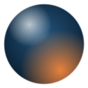

Synapse Orb
Clarity and discipline, at the edge of your browser.
Today
What happened at the gate since midnight.
0passes granted
0minutes on distractions
0denied or timed out
What you're working toward
Synapse uses this to judge your arguments at the gate and to give you advice in the chat. Be specific.
Distracting sites
One per line. Subdomains count too (youtube.com covers m.youtube.com).
The orb
Shortcut: Alt+Shift+S opens the orb on any page. Change it at chrome://extensions/shortcuts.
Synapse server
Where your Synapse app is running. The AI key stays on the server; the extension never sees it.